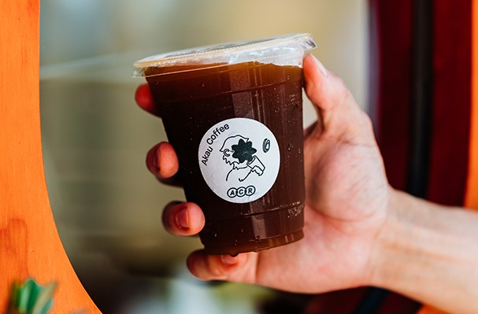

首頁
海珈琲 海とコーヒー
龜時間 goöod time
心得感想

猻物咖啡Akau Coffee
用獨特的烘豆思維與調味實驗，融合屏東當地食材、文化與風土，大膽地探索咖啡滋味。
在不同的季節更會推出不同的水果自製咖啡特調。
「檸檬美式」的黃檸檬也是來自內埔果農所種植的，
輕盈的檸檬果香很適合炎熱的南部天氣。
店裡很推「Affogato」，原料是利用來自屏東的全素食冰品專門店，
而這杯咖啡使用的也是素食者可食用的豆乳冰淇淋，
店內使用的器皿還是找屏東當地的陶藝職人和革製所委託手作的呢！